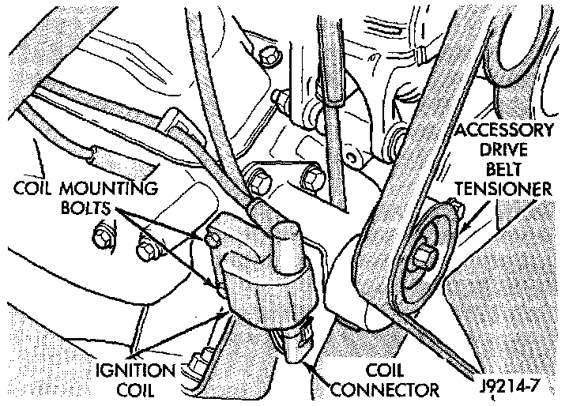

Ignition Coil Test
IGNITION COIL TESTTo perform a complete test of the ignition coil and its circuitry, refer to Powertrain Management/Computers and Control Systems/Testing and Inspection.
Testing and Inspection
To test the coil only, refer to the following:
Fig. 7 Ignition Coil - V8 Shown:

The ignition coil (Fig. 7) is designed to operate without an external ballast resistor.
Inspect the ignition coil for arcing. Test the coil according to coil tester manufacturer's instructions. Test the coil primary and secondary resistance. Replace any coil that does not meet specifications.
If the ignition coil is being replaced, the secondary spark plug cable must also be checked. Replace cable if it has been burned or damaged.
Arcing at the tower will carbonize the cable boot, which if it is connected to a new ignition coil, will cause the coil to fail.
If the secondary coil cable shows any signs of damage, it should be replaced with a new cable and new terminal. Carbon tracking on the old cable can cause arcing and the failure of a new ignition coil.